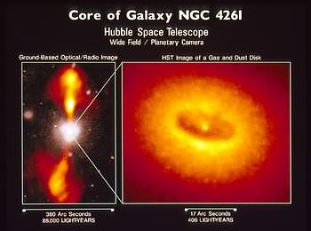

The Sb galaxy NGC4261 harbours a supermassive black hole surrounded by an accretion disk of dust and gas. Its 40,000 light year long jets at thought to form at the interface between the supermassive black hole and the accretion disk.
Credit: STScI/NASA
Credit: STScI/NASA
Jets of matter occur in many astrophysical situations, but can broadly be classified into two types: stellar jets and galactic jets. Stellar jets arise from a number of different sources (T Tauri stars, planetary nebulae, neutron stars and stellar black holes), but galactic jets are believed to have a single source – a supermassive black hole at the centre of a galaxy.
Although the formation of galactic jets is not fully understood, one suggestion is that the magnetic fields of the supermassive black hole and the accretion disk interact. This interaction simultaneously releases energy from the black hole, and constrains the direction in which it can leave the system, funnelling it all into collimated jets.
Another question troubling astronomers is what exactly are these jets made of? The modern consensus is that the main constituents are electrons and their anti-particle equivalent, positrons. These are thought to be produced by ‘pair-production’ close to the event horizon of the central black hole, and squirted out at almost light speed by the action of the combined magnetic fields.
A radio image of the galaxy Cygnus A clearly shows the jet and radio lobes. The ‘hot spots’ that mark the shock fronts between the jet and the interstellar medium are clearly evident.
Credit: Image courtesy of NRAO/AUI
Credit: Image courtesy of NRAO/AUI
Despite appearances, galactic jets are thought to be some of the most rarefied environments in the Universe, with densities of only 10-29 kg/m3 (compared to the 10-27 kg/m3 of normal free space). These incredibly low densities result from the jet effectively ‘sweeping out’ the interstellar material in its path. With time and distance, the swept out material builds up at the head of the jet providing increased resistance. This eventually forms a shock front, with the jet having to force its way through the accumulated gas and dust.